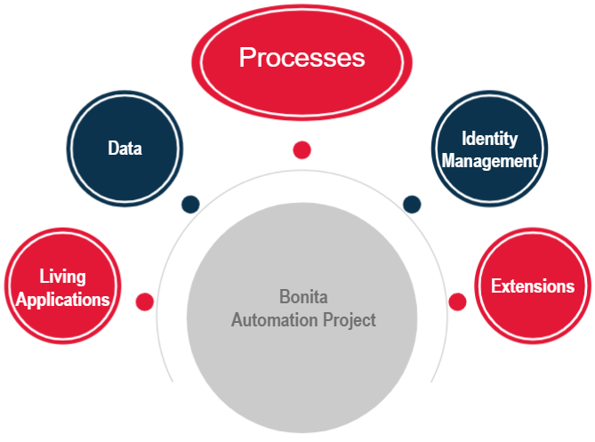
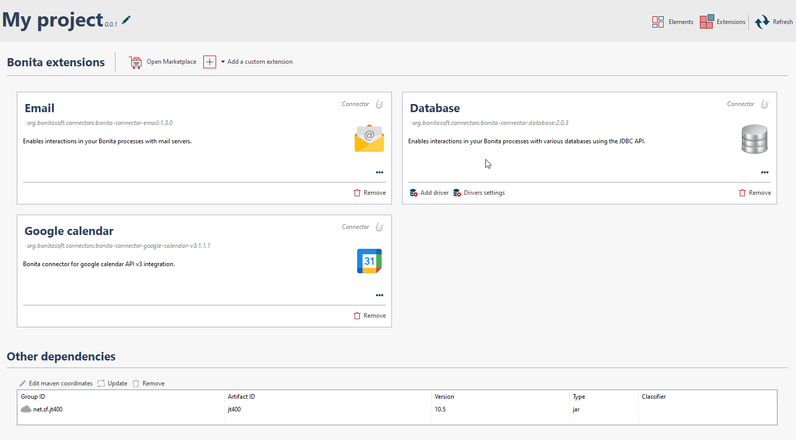

DAY 1
Thalía Cruz
Goals of Bonita Camp
What ? Understand the concepts related to the creation of applications based on process automation and apply them
Who ? Project team and developers starting with Bonita
How ? Theoretical and practical sessions based on a concrete example with Bonita
Agenda
Day 1 - Create a first application
- Bonita solution and Bonita components
- Start a project with Bonita
- Introduction to BPMN 2.0
- Introduction to data management
- User interface: forms
- Users managements (Actors)
- Connectors
- Introduction to applications
Agenda
Day 2 - To go further in the development with Bonita
- Architecture of Bonita platform
- Process design and automation
- Advanced data management
- Extensions
- User interface
- Deployment
Before we start
- Install latest JDK 11 if needed
- Make sure that latest version of Studio is correctly installed
- Download Bonita Camp resources from GitHub: https://github.com/Bonitasoft-Community/bonita-camp/releases
- We recommend to use
 or
or  as your default web browser for development
as your default web browser for development
Bonita solution
Open-source and extensible platform for automation and optimization of business processes
 volume of code required to build an application
volume of code required to build an application
 Several models to define the application
Several models to define the application
 Collaboration simplified between business and technical teams
Collaboration simplified between business and technical teams
 Track process execution for monitoring and optimization
Track process execution for monitoring and optimization
BPM-based applications
Combines processes together to handle a real business use case
Deployed and rendered in a web or mobile browser
Composed of many elements including:
- Forms
- Pages
- Layout
- Themes
Customizable applications

Bonita User Application
Users tasks and cases native application

Bonita Administrator Application

Native application for administration and processes follow-up

Process automation project with Bonita
Bonita Automation project elements
Bonita Components
3 main components:
- Bonita Studio, the development environment
- Bonita Runtime, the production environment
- Bonita Continuous Delivery, Continuous deployment environment for Bonita projects (Subscription Editions)
Studio: design and collaboration environment
 |
|
IDE based on Eclipse
Requires a JVM embedded in Bonita Community Bundle
Wizards and models limit the code
UI Designer: creation of the user interface
 |
|
Using AngularJS and Bootstrap
Browser based
Bonita Runtime: the production environment
Bonita Applications: users and administrators web interfaces
2 native and customizable applications
2 CORE applications embedded in Bonita Runtime
- Bonita User Application
- Bonita Administrator Application
- Super-administrator Bonita Application
- Application Directory

Implementation cycle of a DPA project
The first iteration

Start the project: overview
- A Bonita project is based on
- Direct access to the overview of the project
Introduction to BPMN 2.0
Standard notation (OMG) for process modeling. Key elements:
 | Pool: one pool per process |
 | Start event: the beginning of a process |
 | Human task: when a user is involved |
 | Service task: automatically run by Engine |
 | End event: trigger process archive |
| → | Transitions: used to link elements together |
Gateways
3 types of gateways:
 | Exclusive |  |
 | Parallel | |
 | Inclusive |
- Conditions are defined on gateway outgoing transitions. No condition for parallel gateways
- Gateways should be placed in a symmetrical manner when possible to improve readability

Exercise 1
Modeling a basic process
If you don't already did it get instruction from GitHub:
https://github.com/Bonitasoft-Community/bonita-camp/releases
Types of data
Process data
- Parameters
- Documents
- Variables
Business data
- Dedicated to a process
- Shared between all processes through BDM (Business data model)
Model data: Business data model (BDM)
- Stores business data related to processes instances and/or applications
- Model defines objects to store business data
- Model is defined in the Studio
- From model Bonita generates Java classes (POJO) and creates database tables
- Persistence is managed by Engine
BDM: usage
- Declared in process definition business variables
- Create/Read/Update/Delete using: default values, operations, connectors...
- Can be shared among different process instances
- Lifecycle control by the developer
- APIs for read operations
Data management: MVC model

Decoupling of business logic from graphical interfaces
- Model = BDM
- View = combination of application pages and process forms
- Controller = group of processes
Data: from process to user interface
The data cycle from initialization to update
Contracts
Set of required inputs + validation rules
Data sent by forms must satisfy a contract in order to:
- Start a process
- Execute a human task
Contributes to the decoupling of process logic and user interface
Exercise 2
Adding data and specifying contracts
The user interface: Forms
- Associated with tasks or process
- Automatically initialized in UI Designer from contracts
- Created with UI Designer with containers and widgets
- Based on AngularJS and Bootstrap
The user interface: Forms
2 types of forms:
- Editable forms that must satisfy a contract
- Process instantiation defined at pool level
- Human tasks (no forms on service tasks)
- Overview form (read-only) defined at pool level
Exercise 3
Creating forms
Who can do a task?
A set of users but protection against concurrent access is provided:
- User needs to be authenticated
- User needs to be known in Bonita user database
- Notion of candidate and assignee to a task
Support for LDAP, Active Directory, SAML V2, CAS, Kerberos includes in Enterprise Edition
Actors in a process
Define who can do a task in a process:
Those actors will be mapped to the organisation defined with:
- Groups
- Roles
- Users
Actors
- Declare one or several actors in process definition (just a name)
- Process configured to associate an actor with users:
- Directly to a set of specific users
- Indirectly using groups and roles of users
- Map actor directly to the task or using a lane
- Actors cannot use "live data"
Who can start a process instance?
All users associated with the actor with "initiator" flag
Only one actor on a given process definition has this flag
For a given process instance the user who start it will be registered as the initiator of the instance
Profiles
Profiles define access and navigation in Living applications, to objects and attributes of the BDM
3 profiles dy default in Bonita:
- User
- Administrator
- Process manager (only for Subscription Editions)
Possibility to define custom profiles (Subscription Editions only)
Profiles: way of working
Exercise 4
Configuring actors
Extensions in Bonita
Allows processes to interact with IS
Centralized in the Bonita Studio extensions manager
Connectors
Opposite way to the API Bonita
Placed at the start or the end of a process or a task
A set of standard connectors is shipped in the Studio
Custom connectors can be:
- Implemented using the Studio or other Java IDEs thanks to the Bonita Maven archetype
- Imported from the Community website
Exercise 5
Using a connector to send an email
BPM-based applications
Combines processes together to handle a real business use case
Applications are deployed and hosted in Bonita administrator applications
Deploy from Bonita Studio
The application descriptor is used to define the entire application structure.
- Forms
- Pages
- Layout
- Theme
The layout and theme are customizable and can be deployed from the studio.
Exercise 6
Create and deploy a simple application
Thank you for your attention
Any questions?
Tomorrow - To go further in the development with Bonita
- Architecture of Bonita platform
- Process design and automation
- Advanced data management
- Extensions
- User interface
- Deployment